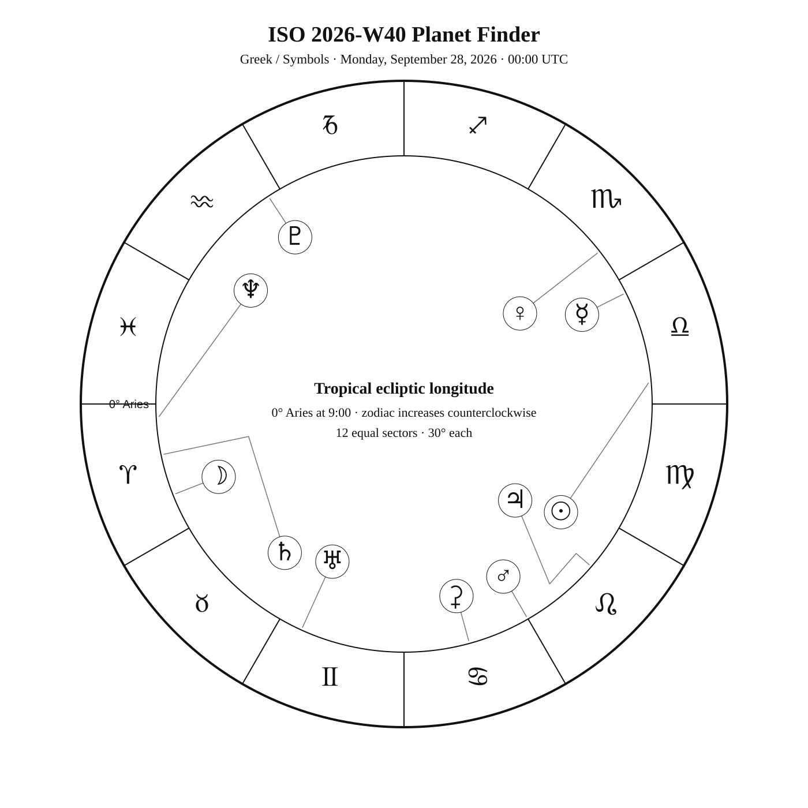
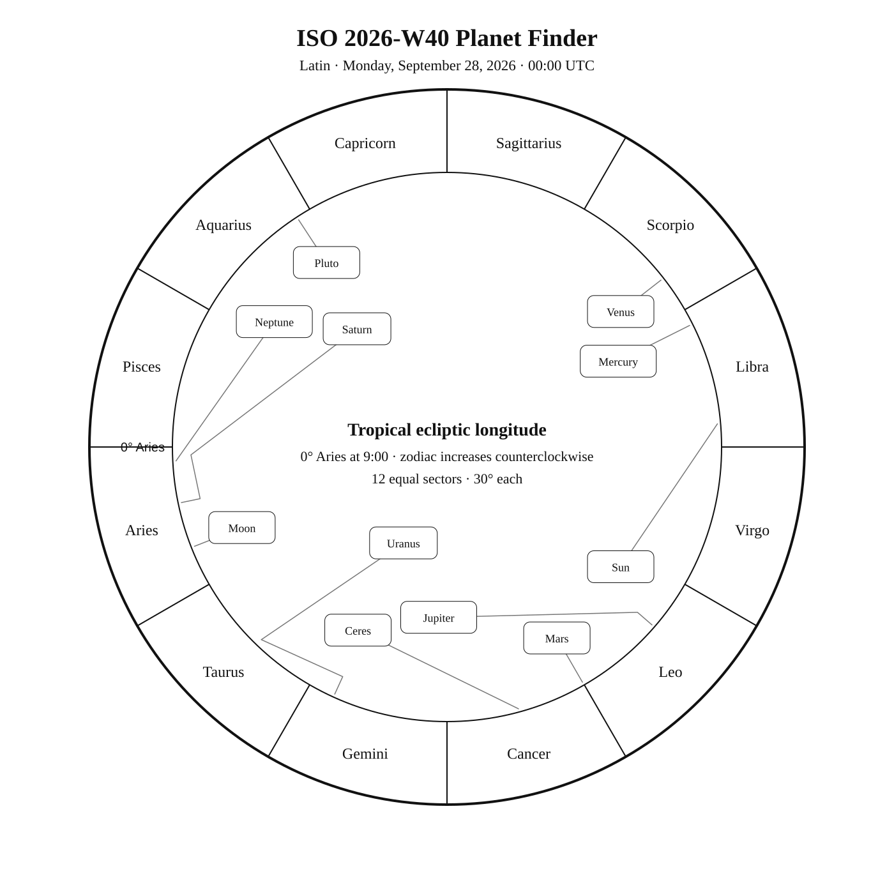
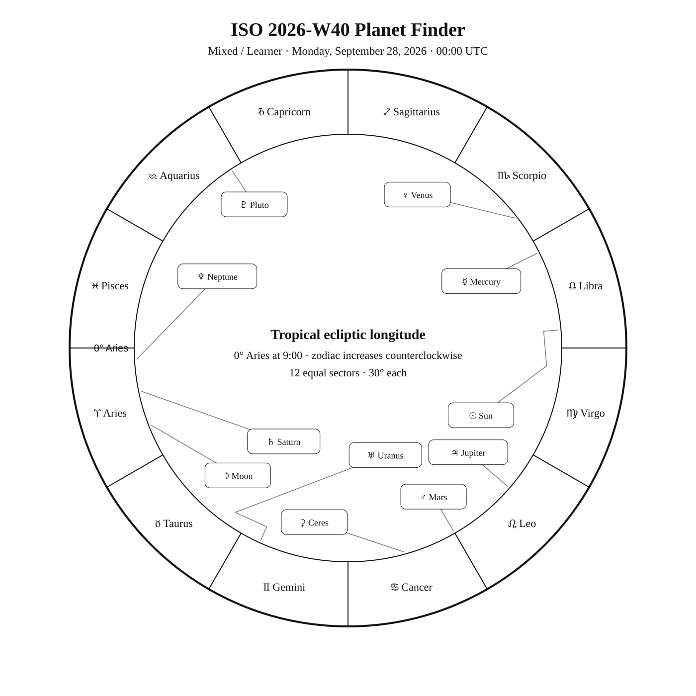

ISO 2026-W40
Week begins: Monday, September 28, 2026
Notation:
Calendar
| Date | Zodiac day | Events |
|---|---|---|
| Mon, Sep 28, 2026 | — | — |
| Tue, Sep 29, 2026 | — | — |
| Wed, Sep 30, 2026 | — | — |
| Thu, Oct 1, 2026 | — | — |
| Fri, Oct 2, 2026 | — | — |
| Sat, Oct 3, 2026 | — | — |
| Sun, Oct 4, 2026 | — | — |
Weekly Solar-System Ephemeris
Snapshot: pending
Notation:
Naked Eye Bodies
| Sun | Moon | Mercury | Venus | Mars | Jupiter | Saturn |
|---|---|---|---|---|---|---|
| — | — | — | — | — | — | — |
Extended Bodies
| Ceres | Uranus | Neptune | Pluto |
|---|---|---|---|
| — | — | — | — |
Notation:
Planet Finder



Sky Notes
Sky notes pending.